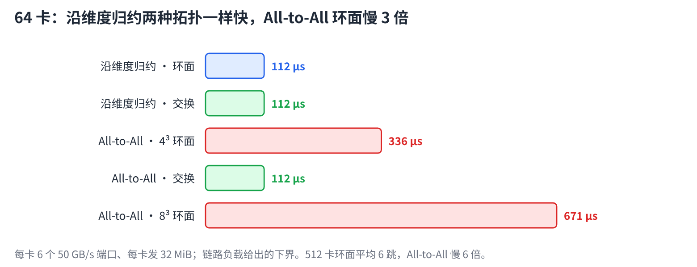
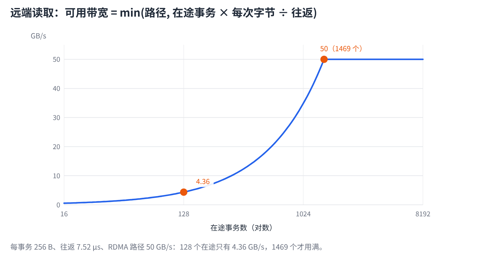
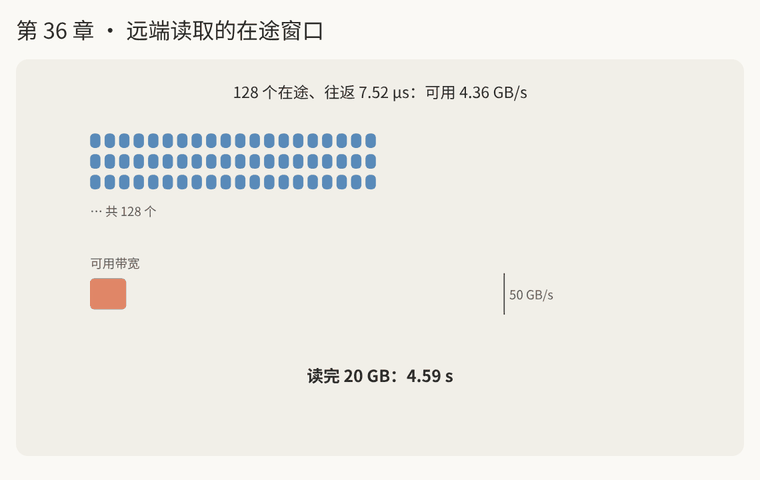

第 36 章 · 超节点的物理组织与内存池：数据走哪条线、借谁的内存
本地运行
git clone https://github.com/wikieden/ai-infra-from-constraints
cd ai-infra-from-constraints/code/notebooks
pip install jupyterlab torch numpy
jupyter lab ch36_topology_pool.ipynb也可以下载后直接用 VS Code 打开 .ipynb 运行。需要 GPU 的章节在 Colab 里选「代码执行程序 → 更改运行时类型 → GPU」。
本章回答：再加一台服务器做 TP16，为什么反而慢？交换机端口怎么分给 GPU 和上联？64 张卡连成环面还是交换网络，各在什么流量下吃亏？一个机柜能放多少卡？UB 怎样让上千台主机共用一块网卡缓存？借别人的内存，读得有多快？
讲解日期：2026-11-24 · 上一章：第 35 章 集合通信的实现与代价 · 下一章：第 37 章 从并行方案到超节点规模
对应原文：materials/ai-infra-book/manuscripts/06-超节点.md§6.5–§6.6 L609–L882（式 6-11、6-12，图 6-30 到 6-46）；§6.5.5 UB / CloudMatrix 略讲
本章缩写：ICI = Inter-Chip Interconnect（芯片间 / 互联，TPU）· OCS = Optical Circuit Switch（光路 / 交换机）· NUMA = Non-Uniform Memory Access（非一致 / 内存 / 访问）· UPI = Ultra Path Interconnect（Intel 处理器间互联）· CPO = Co-Packaged Optics（共封装 / 光学）· RDMA = Remote Direct Memory Access（远程 / 直接 / 内存访问）· QP = Queue Pair（队列 / 对）· RoCE = RDMA over Converged Ethernet · UB = Unified Bus（统一 / 总线）。全部缩写见 缩写与术语表
讲解
第一步：多一台服务器为什么更慢（2026-11-24）
类比：开会多叫一个外地同事。 每人分到的材料少了，但每次表决都要等电话那头。
原文 L615–L623：两台 HGX H100 做 Qwen3-32B 的 TP16。本地：权重再减半，但只有 8 个 KV 头，每卡 KV 与 TP8 一样，本地只从 3.67 降到 2.48 ms。通信：两台服务器、16 rank 的实测 AllReduce（16 KiB 档）32.74 μs：
即使 16 卡在同一个 NVLink 域（30 轮 × 0.822 μs），也要 5.64 ms，仍慢于 TP8。对这类模型，更大的互联域的价值在于装更多实例或更大的模型，而不是把一个会话切得更碎。
一句话：卡多了每卡读得少，但同步跨了更慢的连接；KV 头分完以后，本地时间也降不动了。
第二步：交换机端口和割集（2026-11-24）
类比：小区大门。 门口的通道数固定，多分给进出小区的住户（下联），通往外面大路的车道（上联）就少了。
原文 L625–L633：第三代 NVSwitch 一颗 64 个端口、每端口每方向 25 GB/s。
| 下联 / 上联 | 上联总带宽 | 相对下联 |
|---|---|---|
| 32 / 32 | 800 GB/s | 1 : 1 |
| 48 / 16 | 400 GB/s | 只有下联的 1/3 |
DGX H100 的 NVLink Switch System 每节点只把一半 NVLink 带宽引出，即 2:1 收敛。割集：把系统分成两半，跨过去的链路合起来。阶段内必须跨过的字节 \(V\) 除以割集带宽，就是下界。
路由决定集中在哪几条线（原文 L635–L655）：16 卡物理环，每卡每轮发 4、2、1 MiB。递归算法跳数 1、2、4，最忙链路 4、4、4 MiB；Swing 跳数 1、1、3，最忙 4、2、2 MiB。按 50 GB/s：252 vs 168 μs。
NUMA 也是拓扑（原文 L657）：两路 CPU，卡 0、1 在 A，卡 2、3 在 B，环形归约共 48 MiB。缓冲全放 A：UPI 每方向 24 MiB；放到发送卡附近且同 NUMA 的卡在环里相邻：12 MiB；环交替跨 NUMA：又回到 24 MiB。
一句话：端口总数一定，下联多上联就少；带宽一样时，路由让多少数据挤上同一条线决定时间。
第三步：环面还是交换网络（2026-11-24）
类比：住宅区的路网。 棋盘式的街道（环面）每家只连邻居，去远处要穿过好几户；环形高速 + 出口（交换网络）任何两家都是"上高速—下高速"。
原文 L659–L675：64 张卡，每卡 6 个 50 GB/s 端口（TPU v4 的 ICI 配置）。
| 4×4×4 三维环面 | 交换网络 | |
|---|---|---|
| 最远跳数 | 6 跳（5 颗中间芯片） | 两条链路 + 一次交换 |
| 每跳 200 ns 时多出 | 0.8 μs，128 次约 0.10 ms | — |
| 沿维度归约 | 六条链路同时用满，一样快 | 一样快 |
| 均匀 All-to-All（每卡 32 MiB） | 平均 3 跳，约 336 μs | 每端口 \(M/6\)，约 112 μs |
| 512 卡（8³） | 最远 12 跳，All-to-All 慢 6 倍 | 再加一级交换 |
| 硬件 | 192 条链路，无交换芯片 | 384 条链路 + 6 颗交换芯片 |

图 36-1 · 链路负载给出的下界，不含启动和排队。
环面的割集（原文 L733）：\(k \times k \times k\) 沿一维切开，二分链路 \(2k^2\) 条。\(k\) 从 4 到 8，芯片 64 → 512（8 倍），二分链路 32 → 128（4 倍）：每芯片的跨分区带宽减半。TPU v4 用 OCS 在更大尺度上重新连接 64 芯片单元：重连 1 ms 时，8 芯片 8 MiB 归约从 1 条链路变 3 条（每次省 195.7 μs），重复 6 次就回本；重连 100 ms 要 511 次。
三家的选择：NVIDIA 用交换层把 GPU 扩到机柜（GB200 NVL72）；TPU 用环面 + OCS，让编译器把并行组对齐到维度；华为 UB / CloudMatrix384 用两级交换把 384 个 NPU 和 192 个 CPU 接进统一总线（448 颗交换芯片）。
一句话：规则的集合通信环面不吃亏，任意目的地的 All-to-All 交换网络更快；环面省交换芯片，代价是跳数和每芯片割集带宽随规模变差。
第四步：功率、散热和 UB 的状态规模（略讲）（2026-11-24）
类比：一栋楼的电闸和门禁卡。 电闸总容量决定能开几台空调；门禁系统要给每个住户登记，住户越多登记表越大。
供电（原文 L695–L705，式 6-11）：
DGX H100 一台 10.2 kW（八卡，平均每卡 1.275 kW）。120 kW 预算最多 11 台、88 张卡；64 卡 81.6 kW、72 卡 91.8 kW、96 卡 122.4 kW（超了）。风冷机柜约 40 kW 是上限（一柜 3 台），更密要液冷。交换单元的端口一满，加一张卡就可能多一整套交换设备：成本按整组跳升。
UB 的状态规模（原文 L769–L788）：每个网卡要缓存通信关系的上下文（取 256 KiB），每台主机 8 个应用端点：
| 逐对连接（RoCE RC） | 端点加通道（UB） | |
|---|---|---|
| 每多一台主机 | +32 KiB | +56 B |
| 256 KiB 缓存能容纳 | 8 台 | 4000 多台 |
| CloudMatrix384 的 192 台 | 约 6 MiB（缓存的 24 倍） | 约 11 KiB |
| \(N = M = 1024\) 建连（32 核） | 约 17 s | 约 16 ms |
缓存一致的互联（NVLink 一类）还要目录记录每个缓存行被谁持有，开销随对端数增长，规模限在几十个对端（NVL72 的 72 张 GPU）。UB 不维护跨主机缓存一致，可见性由应用安排（第 40、41 章展开）。
一句话：功率和散热先给出能装多少；连接状态随主机数怎么长，决定互联能扩到多大。
第五步：内存池：借得到，还要读得动（2026-11-24）
类比：向邻居借书柜。 书能放过去，但每次查书都要走过去；一次只能带几本回来，往返一趟的时间决定每分钟能查多少。
借用（原文 L820–L838）：四节点每节点 80 GB，任务需要 100、60、40、40 GB：总量够（240 < 320），任务 0 单节点放不下。把它的 20 GB 放到节点 1：占用变成 80、80、40、40 GB。借用没增加物理内存。要讲清谁提供、谁使用、权限、何时可用、何时归还。
读得多快（原文 L844–L857，式 6-12）：每事务 \(q\) 字节、往返 \(L\)、最多 \(u\) 个在途：
RDMA 路径 50 GB/s，\(L = 7.52\) μs，\(q = 256\) B：
| 在途事务 \(u\) | 可用带宽 | 读 20 GB |
|---|---|---|
| 128 | 4.36 GB/s | 4.59 s |
| 1469（最少） | 50 GB/s | 0.40 s |
| 4096 | 受路径限制 50 GB/s | 0.40 s |

图 36-2 · 第 21 章的 Little 定律搬到了跨主机。
存远端还是取回来（原文 L861–L871）：每分钟读一次 20 GB 只要 0.33 GB/s；每秒 20 次要 400 GB/s。同一份 20 GB 读 10 次：逐次远端读约 4.0 s；先取回 0.40 s + 本地 HBM 读 10 次约 0.06 s = 0.46 s。会话等用户输入时适合放远端，活跃会话每步都要读，应该在本地。
一句话：远端内存解决放得下；能否替代本地，看在途事务够不够、读得频不频，反复读的数据要取回本地。
动画演示：远端读取的在途窗口

可交互版：animations/36-topology-pool.html（滑块：在途事务数 16–8192，对数；往返时延 7.52 / 15.04 μs）。
怎么看：
- 一条时间轴上画出一个往返窗口内同时在途的请求（第五步）；
- 右边一根条：\(uq/L\) 和路径带宽 50 GB/s 取较小者；
- 下面显示读完 20 GB 要多久；
- 播放时 128 → 512 → 1469 → 4096：带宽从 4.36 GB/s 涨到 50 GB/s 后不再变；最后把往返翻倍。
练习与作答记录
题 1（第一步）：TP16 跨服务器，本地 2.48 ms、每步 128 次 AllReduce。每次 AllReduce 降到多少 μs 时才和机内 TP8 的 5.15 ms 一样快？
作答记录：（待作答）
题 2（第四步）：每台服务器 10.2 kW、8 卡，预算 200 kW，另有 15 kW 交换设备。最多装多少张卡？按 40 kW 风冷机柜算要几个机柜？
作答记录：（待作答）
题 3（第五步）：远端路径 100 GB/s、往返 5 μs、每事务 512 B。用满路径至少要多少个在途事务？只有 256 个时可用带宽是多少？
作答记录：（待作答）
原书实验 6-6 到 6-9（L677、L707、L800、L873）。想多练可以做。
口诀
多叫外地同事，材料分得少，表决要等电话；
大门通道分给住户多，通往大路就少；
棋盘街去远处穿好几户，高速任意两家上下一次；规则的活棋盘不吃亏；
电闸定空调数，门禁表随住户长；
借邻居书柜，往返一趟能带几本决定查得多快。
本章复习卡片
I133（TP16 跨服务器 6.67 ms 与 NVSwitch 端口分配、割集）、I134（环面 vs 交换网络：跳数、All-to-All 3 倍、\(2k^2\) 二分链路；功率上限 88 卡）、I135（UB 状态 32 KiB vs 56 B / 主机与内存池的 \(uq/L\)）。练习做完后，按答错、卡住的地方再补。
附录 · 延伸阅读
留给以后深入学习用，不影响本章主线。★ 是建议先读的。
推荐阅读
| 读什么 | 读哪里 | 读它为了什么 |
|---|---|---|
| ★ AII 第 6 章 | §6.5–§6.6 L609–L882 | 本章原文 |
| Jouppi 等，TPU v4（ISCA 2023） | ICI 与 OCS | 环面加光交换 |
| De Sensi 等，Swing（NSDI 2024） | 算法一节 | 环面上分散链路负载 |
| NVIDIA DGX H100 / GB200 NVL72 文档 | NVLink Switch System | 交换网络的规模与收敛 |
| CloudMatrix384 论文 | §3 | UB 两级交换与 384 NPU |
| ASHRAE 液冷白皮书 | 机柜功率 | 风冷上限 |
| 第 21 章 存储层次与数据搬移 | Little 定律 | 式 (6-12) 的前置 |
数学原理
- 割集下界：\(T \ge V_{A \to B} / B_{A \to B}\)。
- 环面：\(k^3\) 节点、二分链路 \(2k^2\)，每节点跨分区带宽 \(\propto 1/k\)。
- Little 定律：在途字节 = 带宽 × 往返。
- 状态规模：逐对 \(O(A^2 H)\)，端点加通道 \(O(A + H)\)。
公式清单
| 公式 | 意思 |
|---|---|
| \(N \le g\lfloor (P_b - P_0)/P_s \rfloor\) | 式 (6-11) |
| \(B_{\mathrm{usable}} = \min(B_{\mathrm{path}}, uq/L)\) | 式 (6-12) |
| \(S_{\mathrm{pair}} = 512A^2(H-1) + 32A\)，\(S_{\mathrm{UB}} = 52A + 56(H-1)\) | 网卡状态 |
代码对照：把本章的数字用代码算一遍
代码
ai-infra/solutions/chapter-code/ch36_topology_pool.py，测试tests/test_ch36.py：
bash cd ai-infra/solutions/chapter-code uv run python ch36_topology_pool.py uv run pytest tests/test_ch36.py
| 讲义 | 写法 | 跑出来 |
|---|---|---|
| 第一步 | tp16_cross_server() |
6.67 ms |
| 第三步 | torus_alltoall_us(32 * MiB, k) |
336 / 112 μs；512 卡 671 μs |
| 第四步 | max_cards(120)、nic_state(192)、setup_s(1024, 1024) |
88 卡；6 MiB vs 11 KiB；17 s vs 16 ms |
| 第五步 | window_bw(u) |
4.36 GB/s；1469 个 |
代码里才看得到的 3 件事：
- 环面平均跳数按每维 \(k/4\) 算（\(k\) 为偶数时环上平均距离），三维共 \(3k/4\)。
- 交换网络按无阻塞算：交换层不限制各端口同时满速。
- 建连时间里，UB 的 \(M\) 个远端各要一次带外往返，所以对往返时延也敏感，但只乘 \(M\) 而不是 \(NM\)。
自己改一改（不影响练习答案）：
- 给
torus_alltoall_us加二维环面版本，比较 8×8 和 4×4×4。 - 把
nic_state的缓存改成 1 MiB、端点改成 64，算逐对连接能容纳几台。 - 用
window_bw画出往返 2、7.52、20 μs 三条曲线。